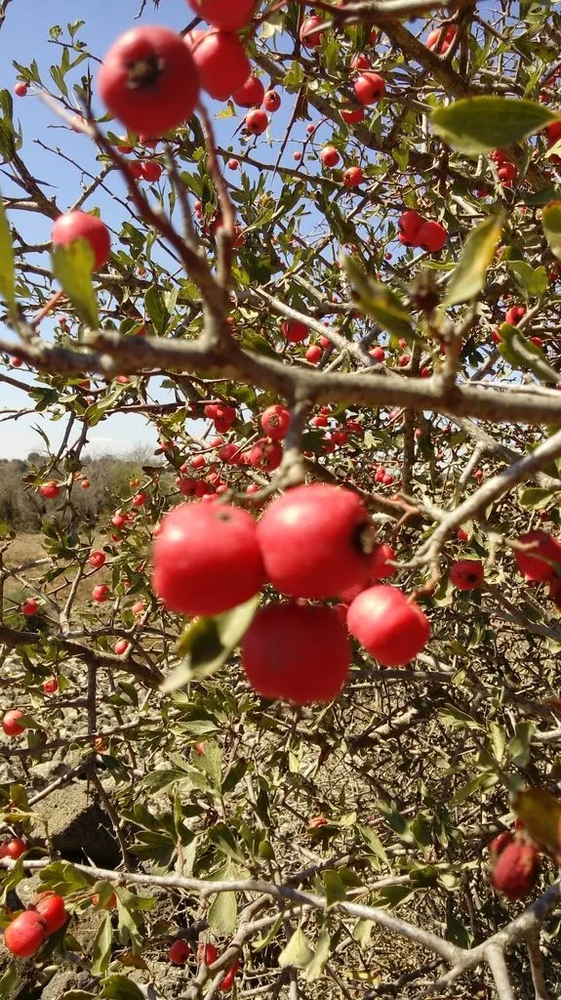

乔木 · 植物界
山楂 Crataegus pinnatifida

中国北方常见的落叶小乔木，果实山楂酸甜可口，可制冰糖葫芦与山楂片，也是消食健胃的中药材。
- 分类
- 门被子植物门纲木兰纲目蔷薇目科蔷薇科属山楂属
- 栖息环境
- 海拔 1500 米以下的山坡、丘陵与村旁，喜光耐寒耐旱
- 地理分布
- 中国东北、华北、西北及华东地区，朝鲜半岛、俄罗斯也有分布
- 保护级别
- 暂无评估；中国未列入国家重点保护野生植物名录
物种志
山楂为落叶小乔木，高可达 6 m，树皮灰褐色，枝条具刺；叶片宽卵形或三角状卵形，羽状 5–9 裂，边缘具尖锐锯齿。花期 5–6 月，伞房花序顶生，花白色，花径约 1.5 cm；果实为梨果，近球形，直径 1–2.5 cm，成熟时深红色，表面具白色斑点，内含 3–5 粒种子。
山楂分布于中国东北、华北及西北、华东地区，也见于朝鲜半岛、俄罗斯，中国北方广泛栽培，喜光、耐寒、耐旱，适应性强。果实酸甜，可鲜食或加工成冰糖葫芦、山楂片、山楂糕与果酱；果实入药，能消食健胃、活血化瘀，是传统的中药材；叶片与花可代茶。山楂树形优美、秋季红果满枝，也是优良的观赏树种，在北方庭院与公园中常见。
形态与习性
- 株高可达 6 m，枝条具刺
- 花期5–6 月，花白色
- 果期9–10 月，梨果深红色
- 光照喜光，不耐长期荫蔽
- 水分耐旱，怕积水
- 主要用途鲜食与冰糖葫芦、山楂入药、庭院观赏
趣味知识
- 山楂果实可加工成冰糖葫芦，是中国北方冬季的传统小吃。
- 山楂入药能消食健胃、活血化瘀，是传统的中药材。
- 山楂果实表面有白色斑点，成熟时深红色，是辨认它的特征。